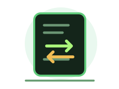

Entradas
—C
Minha contaMovimentações
← Voltar à visão geralVer relatórios →
ORGANIZE SEU DINHEIRO
Movimentações
Registre entradas e saídas para acompanhar o que acontece com seu dinheiro.

Saídas
—Saldo do período
—Entradas menos saídas registradasSeus registros
Movimentações cadastradas na sua conta.